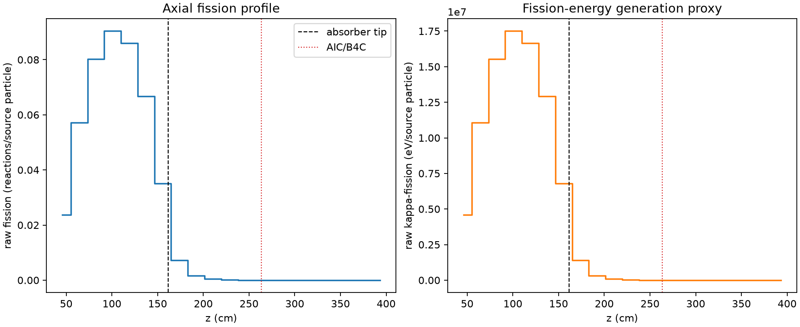
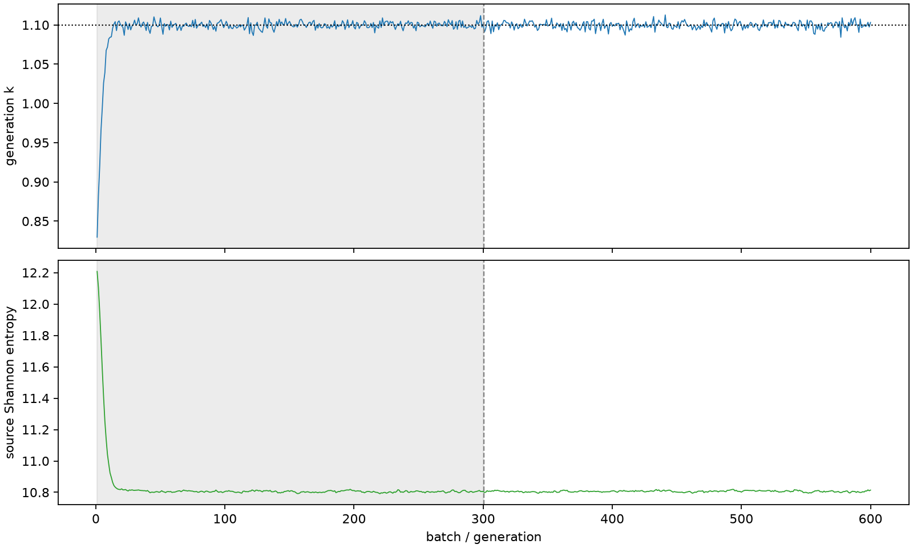

| field | value |
|---|---|
| experiment | V2-STAGE_256_OGRENCI_01-0018 |
| k | 1.0994617684269563 |
| MC standard error | 0.00019196587223212037 |
| seconds | 1026.3084650219826 |
| acceptance | not_assessed |
| convergence | review_required |
Completed is output integrity only; physical and statistical review required. Zero tallies do not prove zero production or zero uncertainty.
| diagnostic | value |
|---|---|
| geometric fuel voxels | 5280 |
| zero fission tally voxels | 1253 |
| low signal fuel voxels | 2378 |
| low signal fission share | 7.06821589473794e-05 |
| low signal kappa share | 7.072110070896813e-05 |
| important fission share | 0.9500490540306203 |
| previous filter included | 2902 |
| duration estimate s | 1562.5173488400023 |
| actual minus estimate s | -536.2088838180198 |
| fission relative MC error | statistics |
|---|---|
| all_geometric_fuel | {"voxels": 5280, "positive_mean_voxels": 4027, "zero_mean_voxels": 1253, "undefined_relative_error_voxels": 1253, "median": 0.01771084129216114, "p95": 0.956945202542652, "maximum": 1.0000000000000002} |
| low_signal | {"voxels": 2378, "positive_mean_voxels": 1125, "zero_mean_voxels": 1253, "undefined_relative_error_voxels": 1253, "median": 0.6286356360899971, "p95": 1.0, "maximum": 1.0000000000000002} |
| important_95pct | {"voxels": 1702, "positive_mean_voxels": 1702, "zero_mean_voxels": 0, "undefined_relative_error_voxels": 0, "median": 0.005907511345919979, "p95": 0.009527938156815212, "maximum": 0.0111061789123474} |
| outside_previous_filter | {"voxels": 2378, "positive_mean_voxels": 1125, "zero_mean_voxels": 1253, "undefined_relative_error_voxels": 1253, "median": 0.6286356360899971, "p95": 1.0, "maximum": 1.0000000000000002} |
| kappa_fission relative MC error | statistics |
|---|---|
| all_geometric_fuel | {"voxels": 5280, "positive_mean_voxels": 4027, "zero_mean_voxels": 1253, "undefined_relative_error_voxels": 1253, "median": 0.017680882759641935, "p95": 0.9570606179489657, "maximum": 1.0000000000000002} |
| low_signal | {"voxels": 2378, "positive_mean_voxels": 1125, "zero_mean_voxels": 1253, "undefined_relative_error_voxels": 1253, "median": 0.6296562088247895, "p95": 1.0, "maximum": 1.0000000000000002} |
| important_95pct | {"voxels": 1702, "positive_mean_voxels": 1702, "zero_mean_voxels": 0, "undefined_relative_error_voxels": 0, "median": 0.0059006770289288125, "p95": 0.009516246237015216, "maximum": 0.01109306707289584} |
| outside_previous_filter | {"voxels": 2378, "positive_mean_voxels": 1125, "zero_mean_voxels": 1253, "undefined_relative_error_voxels": 1253, "median": 0.6296562088247895, "p95": 1.0, "maximum": 1.0000000000000002} |
| axial bin | fission share | kappa-fission share |
|---|---|---|
| 1 | 0.052840278129312294 | 0.05284227167401941 |
| 2 | 0.1274767925380704 | 0.12747483083481712 |
| 3 | 0.17874949031140958 | 0.17874712635216683 |
| 4 | 0.20141936190077384 | 0.2014165577046801 |
| 5 | 0.1914917401133056 | 0.1914889162937119 |
| 6 | 0.1485737226014627 | 0.14857177707899044 |
| 7 | 0.07812818523310798 | 0.07812984157704957 |
| 8 | 0.016282232610810864 | 0.016288417211554752 |
| 9 | 0.0038162095458430384 | 0.00381772659336737 |
| 10 | 0.0009338355067794472 | 0.0009342464770082045 |
| 11 | 0.0002190625677370779 | 0.00021916108540421728 |
| 12 | 5.1604239014064585e-05 | 5.163268892966814e-05 |
| 13 | 1.2233747214017799e-05 | 1.223978566928857e-05 |
| 14 | 3.863772394879052e-06 | 3.8657132235172935e-06 |
| 15 | 1.1020547704713027e-06 | 1.1037001857024222e-06 |
| 16 | 2.846308444636977e-07 | 2.847327183693275e-07 |
| 17 | 4.971493197747146e-10 | 4.96503441802429e-10 |
| 18 | 0.0 | 0.0 |
| 19 | 0.0 | 0.0 |
| 20 | 0.0 | 0.0 |
Histories include the inactive-to-active transition at batch 300. kappa-fission approximates fission energy production, not total heat deposition.

